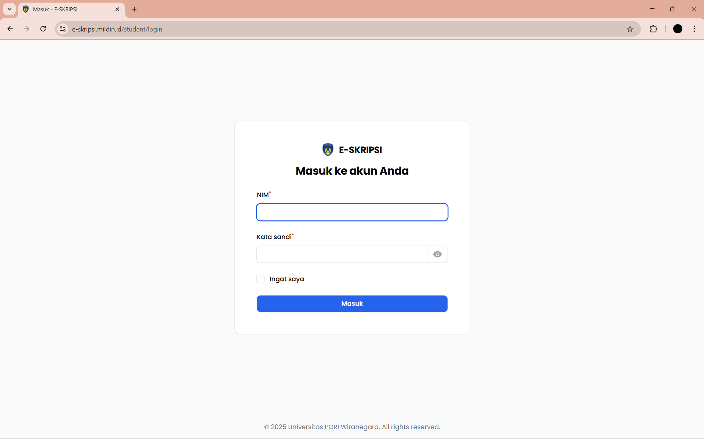

Feb 2026 – Sekarang
Asisten Lapangan
SPPG Purutrejo 2
Memantau produksi dan distribusi, ketersediaan bahan baku, jumlah porsi, koordinasi sekolah/kader posyandu, serta laporan operasional.
Pengalaman di bidang operasional, administrasi, pergudangan, pengolahan data, dan dukungan IT.
Lulusan S1 Ilmu Komputer dengan pengalaman di bidang operasional, administrasi, pergudangan, dan pengolahan data. Terbiasa melakukan pengecekan barang, pencatatan data, penyusunan laporan, serta menggunakan komputer untuk mendukung pekerjaan. Mampu bekerja sama dalam tim, mengikuti prosedur kerja, dan mempelajari keterampilan baru sesuai kebutuhan perusahaan.
Koordinasi lapangan, pemantauan kebutuhan, distribusi, dan pelaporan.
Input data, pengarsipan dokumen, laporan, dan Microsoft Office.
Penyortiran inbound/outbound, pengecekan barang, dan kerapian gudang.
Pengecekan perangkat, troubleshooting dasar, dukungan praktikum.
HTML, CSS, JavaScript, PHP, Laravel, dan Tailwind CSS.
Editing dasar menggunakan Canva dan CapCut.
Feb 2026 – Sekarang
SPPG Purutrejo 2
Memantau produksi dan distribusi, ketersediaan bahan baku, jumlah porsi, koordinasi sekolah/kader posyandu, serta laporan operasional.
Des 2025 – Jan 2026
PT Rajawali Assa Mandiri
Mengelola laporan bulanan, administrasi harian, dan pengelolaan media sosial.
Agu 2025 – Nov 2025
SPX
Menyortir barang inbound/outbound, memastikan kesesuaian resi dan tujuan, serta menjaga kerapian gudang.
Sep 2024 – Des 2024
Algostudio, Malang
Membantu penambahan fitur website Management SDM, pengujian, dan perbaikan bug.
2024 – 2025
Universitas PGRI Wiranegara
Pengecekan komputer, troubleshooting dasar, dan mendukung praktikum.
Okt 2018 – Mar 2019
Badan Keuangan Daerah Kabupaten Pasuruan
Mendukung tugas administrasi dan pengelolaan dokumen.
Universitas PGRI Wiranegara · 2021–2025
IPK 3,70
SMKN 1 Pasuruan · 2017–2020
Nilai 82,21
Pendanaan usaha kreatif “VektoRizz” — Industri Kreatif, Seni, dan Budaya.
Juara 1 Festival Al-Banjari se-Jawa Timur.
Proyek pilihan
Aplikasi web untuk pengajuan dan peninjauan judul skripsi secara digital.



Proyek pilihan
Aplikasi web untuk pengajuan dan peninjauan judul skripsi secara digital.